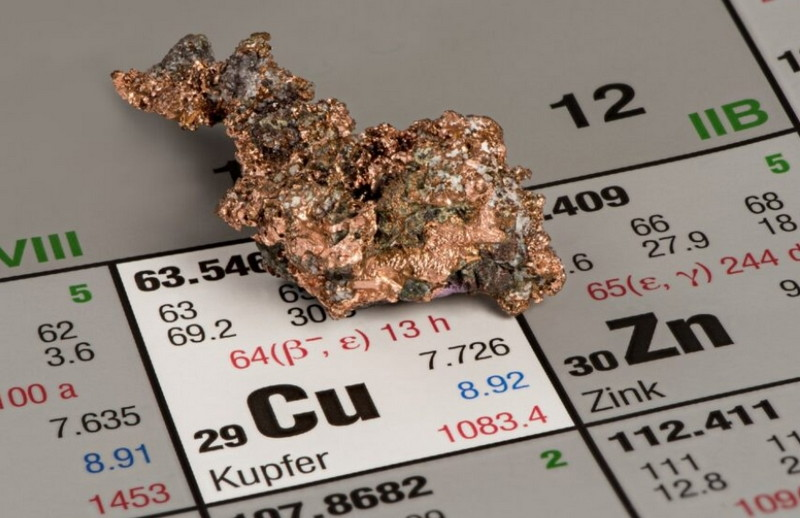
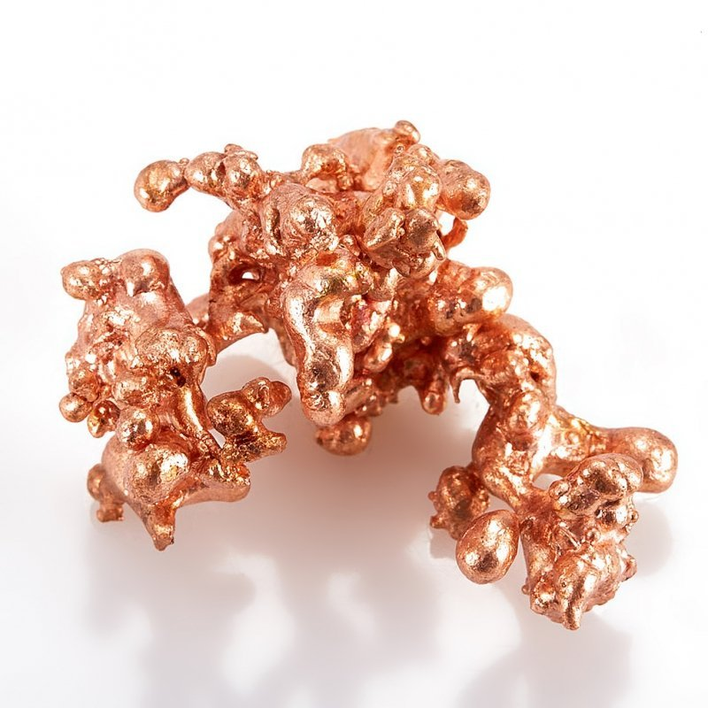

Медь
Медь (химический символ — Cu, от лат. Cuprum) — химический элемент 11-й группы (по устаревшей классификации — побочной подгруппы первой группы, IB) четвёртого периода периодической системы химических элементов Д. И. Менделеева, с атомным номером 29. В виде простого вещества медь — это пластичный переходный металл золотисто-розового цвета (розового цвета при отсутствии оксидной плёнки).

Медь — один из первых металлов, хорошо освоенных человеком из-за доступности для получения из руды и малой температуры плавления. Этот металл встречается в природе в самородном виде чаще, чем золото, серебро и железо. Одни из самых древних изделий из меди, а также шлак — свидетельство выплавки её из руд — найдены на территории Турции, при раскопках поселения Чатал-Гююк. Медный век, когда значительное распространение получили медные предметы, следует во всемирной истории за каменным веком. Экспериментальные исследования С. А. Семёнова с сотрудниками показали, что, несмотря на мягкость меди, медные орудия труда по сравнению с каменными дают значительный выигрыш в скорости рубки, строгания, сверления и распилки древесины, а на обработку кости затрачивается примерно такое же время, как для каменных орудий.
Бо́льшую часть металлической меди получают из сульфидных руд, которые, как правило, содержат 0,5–1,2 % меди. Размолотую руду подвергают флотационному обогащению; полученный концентрат содержит до 15 % меди. Основным методом извлечения меди из концентратов является пирометаллургический, в котором после обогащения концентрат подвергают окислительному обжигу при 1400 °С.
Использование меди в промышленности связано в первую очередь с её высокими тепло- и электропроводностью, пластичностью. До 50 % меди применяется в электротехнике (изготовление проводов, кабелей, шин, контактов и других токопроводящих частей электрических установок). Все примеси понижают электропроводность меди, поэтому в электротехнике используют металл, содержащий не менее 99,99 % основного компонента. Высокие теплопроводность и антикоррозионные свойства позволяют изготавливать из меди детали теплообменников, криогенных установок, вакуумных аппаратов и др. Более 30 % меди применяют в виде сплавов, важнейшие из которых – бронзы, латуни, мельхиор. В виде фольги медь применяют в радиоэлектронике. Около 10–12 % меди (главным образом в виде солей) используется для приготовления красок, инсектофунгицидов, микроудобрений, катализаторов окислительных процессов, в медицине (антисептические и вяжущие средства), а также в кожевенной и меховой промышленности, в производстве искусственного шёлка. Медь и её сплавы используются для изготовления монет, украшений, утвари, кованых, литых и других художественных изделий.
